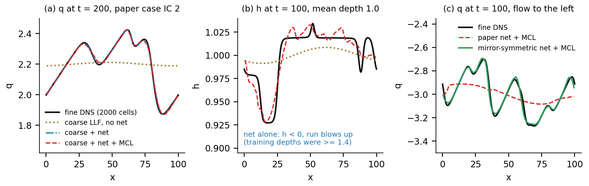

What we built, the maths behind it, and how training and inference work. Reimplementation of Timofeyev, Schwarzmann & Kuzmin, Math. Comput. Simul. 238 (2025) 163–178.
The shallow-water equations describe a water surface (a river, a coastal sea) by two fields: the depth \(h(x,t)\) and the discharge \(q=hv\) (depth × velocity). Resolving every wave takes a fine mesh: here 2000 cells and a time step of 0.005. A coarse mesh of 100 cells is 20× smaller and tolerates a much larger time step, but the standard scheme (local Lax–Friedrichs, LLF) is numerically diffusive and smears the waves away.
The paper's remedy: keep the cheap coarse solver and add a correction flux \(\tilde G\) predicted by a small neural network that was trained on fine-mesh data. A network can output anything, including a correction that drives the depth negative, so a limiter (MCL, monolithic convex limiting) clips \(\tilde G\) to a range in which the update is provably safe.
With \(u=[h,q]^T\) on a periodic domain \((0,L)\), \(L=100\), \(g=9.812\):
$$u_t+f(u)_x=0,\qquad f(u)=\Big[\,q,\ \tfrac{q^2}{h}+\tfrac12 g h^2\Big]^T .$$Finite volumes on \(N_f=2000\) cells (\(\Delta x=0.05\)). The LLF flux through interface \(i+\tfrac12\), with the largest local wave speed \(\lambda\):
$$F_{i+1/2}=\tfrac12\big(f(u_i)+f(u_{i+1})\big)-\tfrac12\lambda_{i+1/2}(u_{i+1}-u_i),\quad \lambda_{i+1/2}=\max\!\big(|v_i|+\sqrt{gh_i},\ |v_{i+1}|+\sqrt{gh_{i+1}}\big),\quad \tfrac{d}{dt}u_i=\tfrac{F_{i-1/2}-F_{i+1/2}}{\Delta x}.$$Time stepping is Heun's method (two Euler stages averaged). The bar state \(\bar u_{i+1/2}=\tfrac12(u_i+u_{i+1})-\tfrac{f(u_{i+1})-f(u_i)}{2\lambda_{i+1/2}}\) rewrites each Euler stage as a convex combination of \(u_i\) and bar states whenever \(\tfrac{\Delta t}{\Delta x}(\lambda_{i-1/2}+\lambda_{i+1/2})\le1\) (the CFL condition), which is why the depth stays positive.
Group \(k=20\) fine cells into a macrocell and average: \(U_i=\tfrac1k\sum_{j\in\text{cell }i}u_j\) (\(N_c=100\), \(\Delta X=1\)). Averaging the fine equation gives an exact coarse equation:
$$\tfrac{d}{dt}U_i=\frac{(\bar F_{i-1/2}+G_{i-1/2})-(\bar F_{i+1/2}+G_{i+1/2})}{\Delta X},\qquad G_{i+1/2}=F(u_{ki},u_{ki+1})-\bar F(U_i,U_{i+1}),$$where \(\bar F\) is the same LLF formula applied to the coarse averages. \(G\) is "anti-diffusive": coarse LLF smooths, \(G\) sharpens it back (we checked this identity to \(10^{-16}\)). The catch: \(G\) needs the fine states, which a coarse run does not have.
Approximate \(\tilde G_{i+1/2}=\mathcal N(U_{i-1},U_i,U_{i+1},U_{i+2};\omega)\): four neighbouring cells × \((h,q)\) = 8 inputs, 2 outputs \((G^h,G^q)\), three hidden layers of 128 neurons with leaky-ReLU (slope 0.01), 34,434 parameters, trained on the mean-squared error
$$\mathcal L(\omega)=\frac1M\sum_{j=1}^{M}\big\|\mathcal N(U^{(j)}_{i-1},\dots,U^{(j)}_{i+2};\omega)-G^{(j)}_{i+1/2}\big\|_2^2 .$$Write the corrected coarse update with limited bar states \(\bar U^{*,\pm}_{i+1/2}=\bar U_{i+1/2}\pm\tilde G^{*}_{i+1/2}/\Lambda_{i+1/2}\):
$$\tfrac{d}{dt}U_i=\tfrac1{\Delta X}\Big[\Lambda_{i-1/2}\big(\bar U^{*,+}_{i-1/2}-U_i\big)+\Lambda_{i+1/2}\big(\bar U^{*,-}_{i+1/2}-U_i\big)\Big].$$MCL demands a local maximum principle: the new bar states must stay within the range of their neighbours, \(h_i^{\min}\le\bar h^{*,-}_{i+1/2}\le h_i^{\max}\) and \(h_{i+1}^{\min}\le\bar h^{*,+}_{i+1/2}\le h_{i+1}^{\max}\), with \(h_i^{\min/\max}=\min/\max(\bar h_{i-1/2},\bar h_{i+1/2})\), and the same for the velocity \(\bar v=\bar q/\bar h\). It is applied in two steps. Height first (eq. 27 of the paper):
$$\tilde G^{h,*}=\begin{cases}\min\!\big(\tilde G^h,\ \Lambda\min(\bar h-h_i^{\min},\ h_{i+1}^{\max}-\bar h)\big),&\tilde G^h\ge0\\[2pt] \max\!\big(\tilde G^h,\ \Lambda\max(\bar h-h_i^{\max},\ h_{i+1}^{\min}-\bar h)\big),&\tilde G^h<0\end{cases}$$Then discharge: limit \(\Delta\tilde G^q=\tilde G^q-\tilde G^{h,*}\bar v\) to the analogous velocity interval (eq. 31) and set \(\tilde G^{q,*}=\tilde G^{h,*}\bar v+\Delta\tilde G^{q,*}\). Under the CFL condition the updated \(U_i\) is then a convex combination of admissible states, so \(h>0\) whatever the network outputs. If the network is accurate the limits are inactive and MCL changes nothing.

Table 1. Relative \(\ell^2\) error of \(q\) against the fine solution averaged to 100 cells, median per group of the 20 test cases (paper cases, outside training range, tough, where the method breaks).
| model | params | paper cases | outside training | tough | breaks | all | net alone blows up |
|---|---|---|---|---|---|---|---|
| plain coarse LLF (no net) | – | 2.57% | 5.51% | 16.81% | 19.63% | 7.78% | – |
| paper net 3×128 + MCL | 34,434 | 0.43% | 2.45% | 8.13% | 13.61% | 2.94% | 5 of 20 |
| mirror-symmetric 3×128 + MCL | 34,434 | 0.58% | 1.71% | 3.80% | 9.64% | 2.41% | 3 of 20 |
| small net 3×32 + MCL | 2,466 | 0.56% | 1.77% | 4.98% | 10.07% | 2.52% | 5 of 20 |
Differences from the paper. Training uses every 10th time step (memory). Our Fig. 6 Lax–Wendroff baseline is less diffusive than the paper's (their variant is not specified). The network-size study (their Figs. 9–10) is only partly reproduced: we trained 3×128 and 3×32 but not 3×64 or 3×16. An earlier version of our code built the training target \(G\) from the wrong fine cell; this report uses the corrected code (a test checks the exact-\(G\) identity of §2.3).
module (work/final_btp/swe/) | implements |
|---|---|
physics.py, solver.py | §2.1–2.2: flux, LLF, bar states, Heun |
data.py | §2.3 and training data: exact \(G\), stencil |
network.py, training.py | §2.4: network, SGD, early stopping |
mcl.py | §2.5: height and discharge limiters |
tests/ | 33 checks against the paper's equations |
Run it (from work/final_btp):
python scripts/generate_data.py → python scripts/train.py → python scripts/precompute.py → python dashboard/server.py, then open localhost:8000.
The dashboard shows any of 20 cases (or your own upload) for all three networks side by side, with the comparison matrix of Table 1.